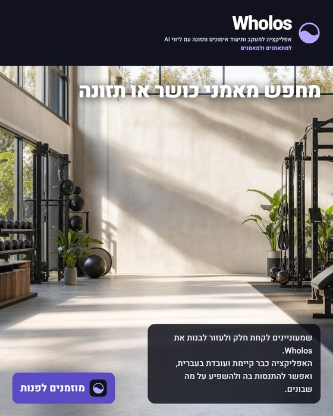
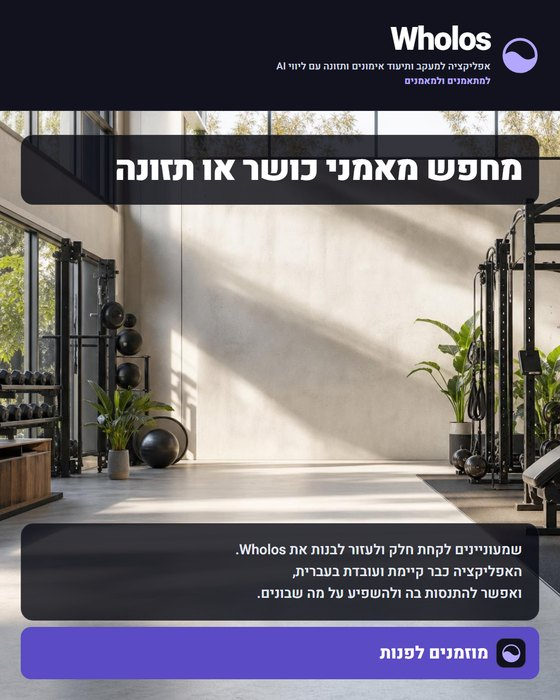
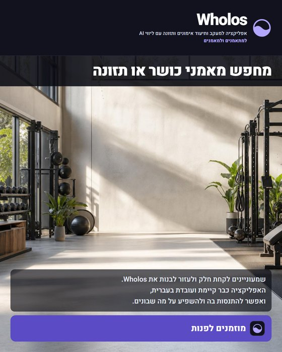
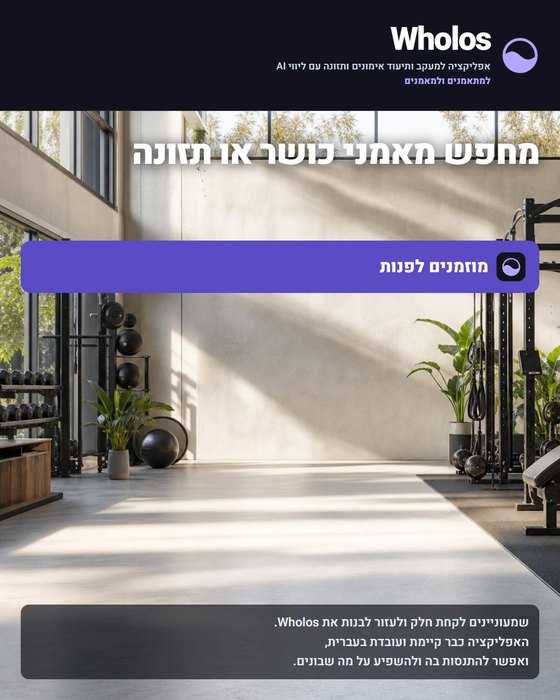
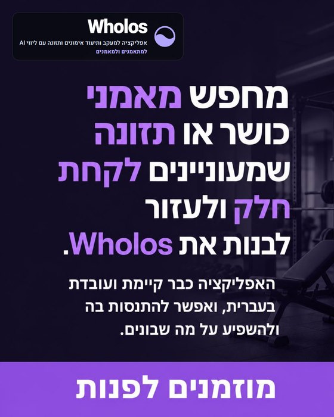
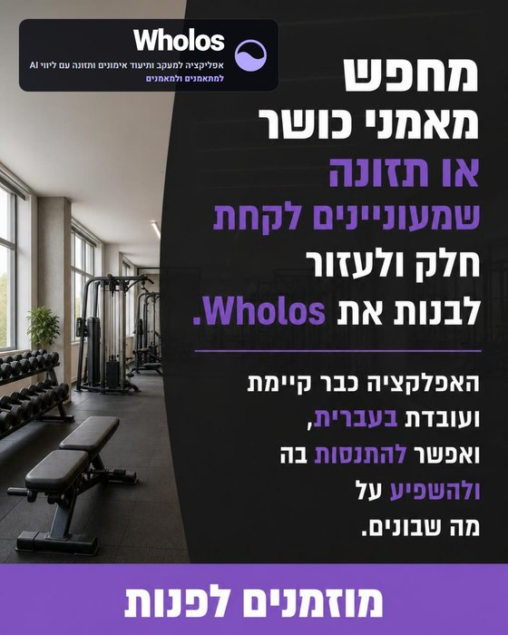

שלנו · הפנייה למעלה, ההסבר בצד
הפנייה גדולה על התמונה, ההסבר בעמודה צרה בצד, והבקשה בפינה הנגדית.
כל הפנייה על התמונה — אין כיתוב נפרד שנושא את המסר. הניסוח נכתב מול gpt-5.6-sol, ומה שקיבל זה המשפט שלך עצמו ולא תיאור שלו, עם הנחיה להישאר בתוכו. הוא שמר: מחפש · מאמני כושר או תזונה · לקחת חלק · לעזור לבנות · אפליקציה שכבר קיימת · להתנסות ולפנות.
ארבע פריסות שבהן הרקע מלאונרדו והטקסט מודפס אצלנו, ושתיים שבהן gpt-image-2 קיבל את כל הטקסט וייצר את הפוסטר בעצמו. בכולן הלוגו אמיתי. בארבע הראשונות הפנייה מופרדת מההסבר — כבלוק אחד זה יצא כבד.

הפנייה גדולה על התמונה, ההסבר בעמודה צרה בצד, והבקשה בפינה הנגדית.




gpt-image-2 קיבל את כל הטקסט וייצר את הפוסטר בעצמו. הלוגו הולבש אחרי, בפינה שהפרומפט שמר ריקה.

שמעוניינים וקיימת — וזה בדיוק המקום שבו המודל
נוטה להישבר. איית אותן במפורש בפרומפט, ואז הגהתי אות-אות: שתיהן יצאו נכון.
מאמנים שרוצים לקחת חלק
מחפש מאמני כושר או תזונה שמעוניינים להתנסות ב-Wholos. האפליקציה כבר קיימת ועובדת, והמטרה היא לקחת חלק ולעזור לבנות אותה יחד.
מוזמנים לפנות
שותפים לבנייה של Wholos
מחפש מאמני כושר או תזונה שרוצים לקחת חלק. האפליקציה כבר קיימת, עובדת וזמינה להתנסות, והשותפות כאן היא לעזור לבנות ולהשפיע.
מוזמנים לפנות